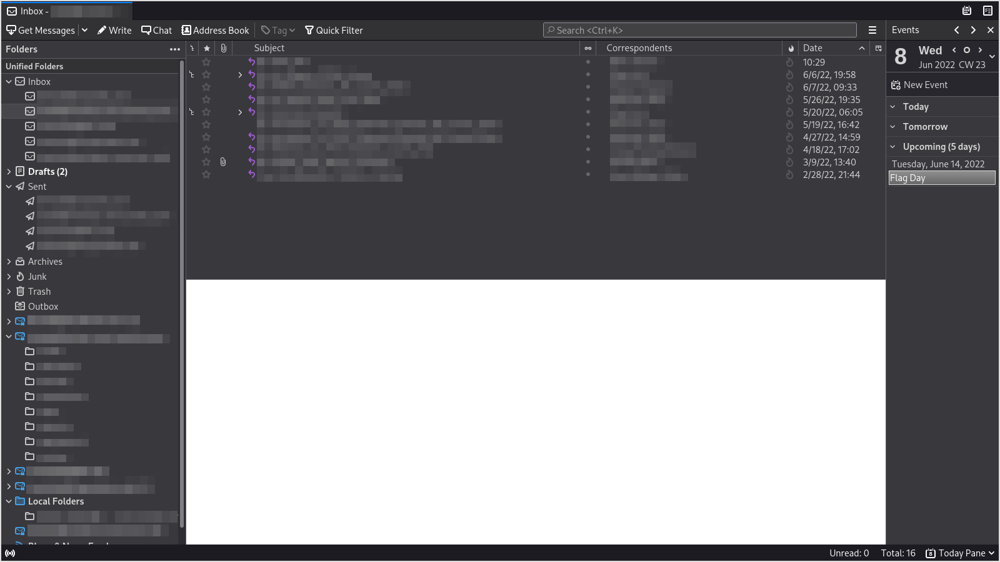

My Primary Operating System 2021—present

Operating System
I am now using Arch Linux. I previously used a base install of Debian on which I installed i3, but since I was already customizing many things, moving to a distribution that is designed for a customized installation, such as Arch, made sense. Also, Arch's packages are generally much more up-to-date than Debian's packages, and the fact that it is a rolling release distribution allows me to use the system indefinitely with out a full reinstall.
Arch is known for being difficult to install and maintain. Its updates are also known for breaking things. Consequently, I was concerned that it might not be practical. However, it was much easier to install than I expected. In fact, despite never having installed it before, I was able to install it faster than I normally install Debian (mostly because the Wi-Fi drivers were pre-installed). I was also under the impression that I would have to compile the kernel, but that was not the case. Its installation was far simpler than I expected.
Additionally, despite the reputation of Arch's updates, I have never installed an update that broke anything major. Occasionally, I have experienced an update that had minor mistakes, such as miss-coloring a button, but those are rare and relatively inconsequential. In general, I have found Arch to be reliable.
Hardware
I am running this operating system on an HP G72-250US laptop. I think that my family purchased it as a Windows 7 laptop in 2011 and used it until the hard drive began to die in late 2019. It has a 2 Core 1.86 GHz Intel Pentium P6000 CPU and 4 GB of ram.
My family has a different laptop now, so I decided to add a new hard drive to this old one in order to use it myself. I bought a cheap 150 GB HDD on eBay, which was a sufficient replacement. I do not need very much hard drive space because I keep most of my files on extremal drives. In fact, I only partitioned about half of the drive for my operating system, leaving the rest in case I decide that I want to add another operating system.
My main complain about the machine is that it becomes very hot and constantly runs its fan loudly. Sometimes the fan can actually be louder than the speakers. One time, when I was browsing the internet, the computer unexpectedly cut power to itself in order to prevent the processor from overheating. However, while its running, it has enough processing power to comfortably do everything that I need to do on a regular basis. However, I cannot use it for resource intensive tasks such as videoconferencing.
Partitioning Scheme
sda1 150M /boot
sda2 6G swap
sda3 35G /
sda4 35G /home
Initial System Setup
I recorded these as the initial commands that I used to set up the system after its first boot. I do not remember very much about them, so I will not comment on them.
# pacman -S networkmanager
# systemctl enable NetworkManager
# pacman -S grub
# grub-install --target=i386-pc /dev/sda
# grub-mkconfig -o /boot/grub/grub.cfg
# passwd
# vim /etc/locale.gen
# vim /etc/locale.gen
# locale-gen
# vim /etc/locale.conf
# ln -sf /usr/share/zoneinfo/America/New_York
# ln -sf /usr/share/zoneinfo/America/New_York /etc/localtime
# vim /etc/hostname
# vim /etc/hosts
# vim /etc/hostname
# exit
Connecting to Wi-Fi
Here is how I connected the machine to a Wi-Fi network.
# info NetworkManager
# nmcli dev wifi list
# nmcli device wifi connect NETWORK_NAME password PASSWORD
# nmcli connection
# ping various-and-sundry.com
Adding A User
I created a user and gave it sudo privilege by adding %wheel ALL=(ALL) ALL to the /etc/sudoers file using visudo.
# useradd -m user
# usermod -aG wheel user
# export EDITOR="/usr/bin/vim"
# visudo
Programs Installed Via Pacman
I installed xorg-server because I want to be able to run X programs.
$ pacman -S xorg-server
resolving dependencies...looking for conflicting packages...Packages (43) freetype2-2.10.4-1 graphite-1:1.3.14-1 harfbuzz-2.8.2-1 libdrm-2.4.107-1 libedit-20210522_3.1-1 libepoxy-1.5.8-1 libevdev-1.11.0-1 libfontenc-1.1.4-3 libglvnd-1.3.3-1 libgudev-236-1 libinput-1.18.0-1 libomxil-bellagio-0.9.3-3 libpciaccess-0.16-2 libpng-1.6.37-3 libunwind-1.5.0-1 libwacom-1.11-1 libx11-1.7.2-1 libxau-1.0.9-3 libxcb-1.14-1 libxdamage-1.1.5-3 libxdmcp-1.1.3-3 libxext-1.3.4-3 libxfixes-6.0.0-1 libxfont2-2.0.4-3 libxkbfile-1.1.0-2 libxshmfence-1.3-2 libxxf86vm-1.1.4-4 llvm-libs-12.0.1-1 lm_sensors-1:3.6.0.r41.g31d1f125-1 mesa-21.1.4-1 mtdev-1.1.6-1 pixman-0.40.0-1 vulkan-icd-loader-1.2.183-1 wayland-1.19.0-1 xcb-proto-1.14.1-3 xf86-input-libinput-1.1.0-1 xkeyboard-config-2.33-1 xorg-fonts-encodings-1.0.5-2 xorg-server-common-1.20.12-1 xorg-setxkbmap-1.3.2-2 xorg-xkbcomp-1.4.5-1 xorgproto-2021.4-1 xorg-server-1.20.12-1Total Download Size: 52.82 MiBTotal Installed Size: 246.23 MiBI installed Wget because I like to use it to download files. I initially installed it so that I could download dwm, dmenu, and st.
$ pacman -S wget
resolving dependencies...looking for conflicting packages...Packages (1) wget-1.21.1-1Total Download Size: 0.72 MiBTotal Installed Size: 2.99 MiBI installed xorg-xinit because I want to run X programs.
$ pacman -S xorg-xinit
resolving dependencies...looking for conflicting packages...Packages (8) libice-1.0.10-3 libsm-1.2.3-2 libxmu-1.1.3-2 libxt-1.2.1-1 xorg-xauth-1.1-2 xorg-xmodmap-1.0.10-2 xorg-xrdb-1.2.0-2 xorg-xinit-1.4.1-3Total Download Size: 0.80 MiBTotal Installed Size: 3.15 MiBI installed xorg because I want to run X programs. I do not know why I installed all of these X packages separately.
$ pacman -S xorg
:: There are 48 members in group xorg::: Repository extra1) xf86-video-vesa 2) xorg-bdftopcf 3) xorg-docs 4) xorg-font-util 5) xorg-fonts-100dpi 6) xorg-fonts-75dpi 7) xorg-fonts-encodings 8) xorg-iceauth 9) xorg-mkfontscale 10) xorg-server 11) xorg-server-common 12) xorg-server-devel 13) xorg-server-xephyr 14) xorg-server-xnest 15) xorg-server-xvfb 16) xorg-sessreg 17) xorg-setxkbmap 18) xorg-smproxy 19) xorg-x11perf 20) xorg-xauth 21) xorg-xbacklight 22) xorg-xcmsdb 23) xorg-xcursorgen 24) xorg-xdpyinfo 25) xorg-xdriinfo 26) xorg-xev 27) xorg-xgamma 28) xorg-xhost 29) xorg-xinput 30) xorg-xkbcomp 31) xorg-xkbevd 32) xorg-xkbutils 33) xorg-xkill 34) xorg-xlsatoms 35) xorg-xlsclients 36) xorg-xmodmap 37) xorg-xpr 38) xorg-xprop 39) xorg-xrandr 40) xorg-xrdb 41) xorg-xrefresh 42) xorg-xset 43) xorg-xsetroot 44) xorg-xvinfo 45) xorg-xwayland 46) xorg-xwd 47) xorg-xwininfo 48) xorg-xwudresolving dependencies...looking for conflicting packages...Packages (68) fontconfig-2:2.13.94-1 libxaw-1.0.14-1 libxcomposite-0.4.5-3 libxcursor-1.2.0-2 libxft-2.3.3-2 libxi-1.7.10-3 libxinerama-1.1.4-3 libxpm-3.5.13-2 libxrandr-1.5.2-3 libxrender-0.9.10-4 libxtst-1.2.3-4 libxv-1.0.11-4 xcb-util-0.4.0-3 xcb-util-image-0.4.0-3 xcb-util-keysyms-0.4.0-3 xcb-util-renderutil-0.3.9-3 xcb-util-wm-0.4.1-3 xorg-fonts-alias-100dpi-1.0.4-1 xorg-fonts-alias-75dpi-1.0.4-1 xorg-util-macros-1.19.3-1 xf86-video-vesa-2.5.0-1 xorg-bdftopcf-1.1-2 xorg-docs-1.7.1-3 xorg-font-util-1.3.2-2 xorg-fonts-100dpi-1.0.3-7 xorg-fonts-75dpi-1.0.3-7 xorg-fonts-encodings-1.0.5-2 xorg-iceauth-1.0.8-2 xorg-mkfontscale-1.2.1-2 xorg-server-1.20.12-1 xorg-server-common-1.20.12-1 xorg-server-devel-1.20.12-1 xorg-server-xephyr-1.20.12-1 xorg-server-xnest-1.20.12-1 xorg-server-xvfb-1.20.12-1 xorg-sessreg-1.1.2-2 xorg-setxkbmap-1.3.2-2 xorg-smproxy-1.0.6-3 xorg-x11perf-1.6.1-2 xorg-xauth-1.1-2 xorg-xbacklight-1.2.3-2 xorg-xcmsdb-1.0.5-3 xorg-xcursorgen-1.0.7-2 xorg-xdpyinfo-1.3.2-4 xorg-xdriinfo-1.0.6-2 xorg-xev-1.2.4-1 xorg-xgamma-1.0.6-3 xorg-xhost-1.0.8-2 xorg-xinput-1.6.3-2 xorg-xkbcomp-1.4.5-1 xorg-xkbevd-1.1.4-3 xorg-xkbutils-1.0.4-4 xorg-xkill-1.0.5-2 xorg-xlsatoms-1.1.3-2 xorg-xlsclients-1.1.4-2 xorg-xmodmap-1.0.10-2 xorg-xpr-1.0.5-2 xorg-xprop-1.2.5-1 xorg-xrandr-1.5.1-2 xorg-xrdb-1.2.0-2 xorg-xrefresh-1.0.6-2 xorg-xset-1.2.4-2 xorg-xsetroot-1.1.2-2 xorg-xvinfo-1.1.4-2 xorg-xwayland-21.1.2-1 xorg-xwd-1.0.7-2 xorg-xwininfo-1.1.5-2 xorg-xwud-1.0.5-2Total Download Size: 27.46 MiBTotal Installed Size: 42.71 MiBNet Upgrade Size: 37.95 MiBI installed Emacs because I use it for text editing and file management and such. I eventually configured dwm to start Emacs when Super-o is pressed. I had already installed Vim using pacstrap.
$ sudo pacman -S emacs
resolving dependencies...looking for conflicting packages...Packages (69) adobe-source-code-pro-fonts-2.038ro+1.058it+1.018var-1 adwaita-icon-theme-40.1.1-1 alsa-lib-1.2.5.1-3 alsa-topology-conf-1.2.5.1-1 alsa-ucm-conf-1.2.5.1-1 aom-3.1.1-1 at-spi2-atk-2.38.0-1 at-spi2-core-2.40.3-1 atk-2.36.0-1 avahi-0.8+20+gd1e71b3-1 brotli-1.0.9-4 cairo-1.17.4-5 cantarell-fonts-1:0.301-1 dav1d-0.9.0-1 dconf-0.40.0-1 desktop-file-utils-0.26-1 flac-1.3.3-3 fribidi-1.0.10-1 gd-2.3.2-4 gdk-pixbuf2-2.42.6-1 giflib-5.2.1-2 glib-networking-1:2.68.1-1 gsettings-desktop-schemas-40.0-3 gtk-update-icon-cache-1:4.2.1-2 gtk3-1:3.24.30-1 hicolor-icon-theme-0.17-2 iso-codes-4.6.0-1 json-glib-1.6.2-1 lcms2-2.12-1 libasyncns-0.8+3+g68cd5af-3 libavif-0.9.2-1 libcanberra-0.30+2+gc0620e4-5 libcloudproviders-0.3.1-2 libcolord-1.4.5-4 libcups-1:2.3.3op2-3 libdatrie-0.2.13-1 libde265-1.0.8-1 libheif-1.12.0-1 libjpeg-turbo-2.1.0-1 libogg-1.3.5-1 libotf-0.9.16-3 libproxy-0.4.17-2 libpulse-14.2-3 librsvg-2:2.50.7-1 libsndfile-1.0.31-1 libsoup-2.72.0+10+gfe1e295d-1 libthai-0.1.28-2 libtiff-4.3.0-1 libusb-1.0.24-2 libvorbis-1.3.7-2 libwebp-1.2.0-1 libxkbcommon-1.3.0-1 libyuv-r2212+dfaf7534-2 lzo-2.10-3 m17n-db-1.8.0-3 m17n-lib-1.8.0-10 opus-1.3.1-2 pango-1:1.48.7-1 rav1e-0.4.1-1 rest-0.8.1-3 shared-mime-info-2.0+57+gc1d1c70-1 sound-theme-freedesktop-0.8-4 speex-1.2.0-3 speexdsp-1.2.0-2 svt-av1-0.8.7-1 tdb-1.4.4-1 wayland-protocols-1.21-1 x265-3.5-1 emacs-27.2-1Total Download Size: 85.77 MiBTotal Installed Size: 317.10 MiBI installed flameshot because it is my favorite screenshot program right now. I configured dwm to launch it when prt sc is pressed.
$ sudo pacman -S flameshot
resolving dependencies...looking for conflicting packages...Packages (8) double-conversion-3.1.5-2 libxkbcommon-x11-1.3.0-1 md4c-0.4.8-1 qt5-base-5.15.2+kde+r210-1 qt5-svg-5.15.2+kde+r7-1 tslib-1.22-1 xdg-utils-1.1.3+19+g9816ebb-1 flameshot-0.9.0-1Total Download Size: 13.94 MiBTotal Installed Size: 68.27 MiBI installed Firefox because it is my favorite browser.
$ sudo pacman -S firefox
resolving dependencies...:: There are 8 providers available for ttf-font::: Repository extra1) gnu-free-fonts 2) noto-fonts 3) ttf-bitstream-vera 4) ttf-croscore 5) ttf-dejavu:: Repository community6) ttf-droid 7) ttf-ibm-plex 8) ttf-liberationlooking for conflicting packages...Packages (38) dbus-glib-0.112-1 ffmpeg-2:4.4-4 gnu-free-fonts-20120503-8 gsm-1.0.19-1 hidapi-0.10.1-1 jack-0.125.0-9 l-smash-2.14.5-2 lame-3.100-3 libass-0.15.1-1 libavc1394-0.5.4-4 libbluray-1.3.0-1 libibus-1.5.24-1 libiec61883-1.2.0-6 libmfx-21.2.3-1 libmodplug-0.8.9.0-3 libraw1394-2.1.2-3 libsamplerate-0.2.1-1 libsoxr-0.1.3-2 libssh-0.9.5-1 libtheora-1.1.1-5 libva-2.12.0-1 libvdpau-1.4-1 libvpx-1.10.0-1 mailcap-2.1.53-1 opencore-amr-0.1.5-5 openjpeg2-2.4.0-1 sdl2-2.0.14-1 srt-1.4.3-1 sysfsutils-2.1.1-1 v4l-utils-1.20.0-1 vid.stab-1.1-3 vmaf-1.5.3-1 x264-3:0.161.r3039.544c61f-1 xvidcore-1.3.7-2 zimg-3.0.1-2 zita-alsa-pcmi-0.3.2-3 zita-resampler-1.8.0-1 firefox-90.0-1Total Download Size: 96.25 MiBTotal Installed Size: 414.11 MiBI installed Thunderbird because it is my favorite e-mail client.
$ sudo pacman -S thunderbird
resolving dependencies...looking for conflicting packages...Packages (4) botan-2.18.1-1 hunspell-1.7.0-3 libevent-2.1.12-1 thunderbird-78.12.0-1Total Download Size: 47.42 MiBTotal Installed Size: 184.60 MiBI installed htop because I like using it to check processes and check CPU and memory usage.
$ sudo pacman -S htop
resolving dependencies...looking for conflicting packages...Packages (1) htop-3.0.5-1Total Download Size: 0.11 MiBTotal Installed Size: 0.27 MiBI installed zathura because it is my favorite PDF viewer, and I need to view PDF file's quite often. I really like being able to navigate with Vim keybindings, and I like that it it updates the displayed PDF automatically if the file that it is reading from is updated.
$ sudo pacman -S zathura
resolving dependencies...looking for conflicting packages...Packages (3) girara-0.3.6-1 libsynctex-2021.58686-3 zathura-0.4.7-1Total Download Size: 0.31 MiBTotal Installed Size: 0.97 MiBThis must have been needed by zathura for some reason. I do not remember what or why.
$ sudo pacman -S zathura-pdf-poppler
resolving dependencies...looking for conflicting packages...Packages (3) poppler-21.07.0-1 poppler-glib-21.07.0-1 zathura-pdf-poppler-0.3.0-1Total Download Size: 1.56 MiBTotal Installed Size: 8.13 MiBI installed texlive-core so that I can use LaTeX. I use LaTeX for most important college papers (basically any papers that include citations) and documents that need sophisticated formatting.
$ sudo pacman -S texlive-core
resolving dependencies...looking for conflicting packages...Packages (9) harfbuzz-icu-2.8.2-1 libpaper-1.1.28-1 libsigsegv-2.13-1 potrace-1.16-2 run-parts-4.11.2-1 t1lib-5.1.2-8 texlive-bin-2021.58686-3 zziplib-0.13.72-1 texlive-core-2021.58710-2Total Download Size: 164.46 MiBTotal Installed Size: 460.03 MiBI installed unzip because I need to unzip zip files sometimes.
$ sudo pacman -S unzip
resolving dependencies...looking for conflicting packages...Packages (1) unzip-6.0-14Total Download Size: 0.14 MiBTotal Installed Size: 0.31 MiBI installed this because I wanted to have all of the default LaTeX packages rather than just texlive-core.
$ sudo pacman -S texlive-most
:: There are 12 members in group texlive-most::: Repository extra1) texlive-bibtexextra 2) texlive-core 3) texlive-fontsextra 4) texlive-formatsextra 5) texlive-games 6) texlive-humanities 7) texlive-latexextra 8) texlive-music 9) texlive-pictures 10) texlive-pstricks 11) texlive-publishers 12) texlive-scienceresolving dependencies...looking for conflicting packages...Packages (13) perl-file-which-1.24-2 texlive-bibtexextra-2021.58697-1 texlive-core-2021.58710-2 texlive-fontsextra-2021.58704-1 texlive-formatsextra-2021.57972-1 texlive-games-2021.56833-1 texlive-humanities-2021.58589-1 texlive-latexextra-2021.58668-2 texlive-music-2021.58331-1 texlive-pictures-2021.58558-1 texlive-pstricks-2021.58293-1 texlive-publishers-2021.58683-1 texlive-science-2021.58667-1Total Download Size: 629.40 MiBTotal Installed Size: 2116.49 MiBNet Upgrade Size: 1728.35 MiB
I installed PulseAudio because I am not going to use ALSA on its own.
$ sudo pacman -S pulseaudio
resolving dependencies...looking for conflicting packages...Packages (4) orc-0.4.32-1 rtkit-0.13-1 webrtc-audio-processing-0.3.1-3 pulseaudio-14.2-3Total Download Size: 1.75 MiBTotal Installed Size: 8.13 MiBI installed alsa-utils. I apparently needed it, and it did not come as a dependency of PulseAudio.
$ sudo pacman -S alsa-utils
resolving dependencies...looking for conflicting packages...Packages (1) alsa-utils-1.2.5.1-1Total Download Size: 1.13 MiBTotal Installed Size: 2.21 MiBI installed Git because I need it and use it all of the time (including for maintaining this web site).
$ sudo pacman -S git
resolving dependencies...looking for conflicting packages...Packages (4) perl-error-0.17029-3 perl-mailtools-2.21-5 perl-timedate-2.33-3 git-2.32.0-1Total Download Size: 5.98 MiBTotal Installed Size: 32.52 MiBI think that I installed hunspell because I needed it in order to use flyspell mode in Emacs. If it is the spell check program that I use in Emacs, I do not think that it is very good.
$ sudo pacman -S hunspell
resolving dependencies...looking for conflicting packages...Packages (1) hunspell-1.7.0-3Total Installed Size: 0.77 MiBNet Upgrade Size: 0.00 MiBI think that I installed this in order to store Git passwords, but I did not end up using it for that. However, It is now a dependency of something else, so I cannot uninstall it.
$ sudo pacman -S libsecret
resolving dependencies...looking for conflicting packages...Packages (1) libsecret-0.20.4-1Total Installed Size: 2.18 MiBNet Upgrade Size: 0.00 MiBI installed GNU Chess so that I can play chess against the computer. I have only used it a handful of times, and I always forget how to use chess notation. Also, GNU chess uses an incredible amount of processing power, quickly making the computer become very hot.
$ sudo pacman -S gnuchess
resolving dependencies...looking for conflicting packages...Packages (1) gnuchess-6.2.8-1Total Download Size: 0.24 MiBTotal Installed Size: 0.63 MiBI installed R so that I can learn how to use it and so that I can do fun things such as plotting COVID-19 data.
$ sudo pacman -S r
resolving dependencies...looking for conflicting packages...Packages (4) blas-3.10.0-1 lapack-3.10.0-1 zip-3.0-9 r-4.1.0-1Total Download Size: 57.99 MiBTotal Installed Size: 87.11 MiBI installed sxiv because it is probably the best image viewer in existence. That might be true just because of its Vim keybindings. However, it also provides an incredibly convenient thumbnail mode that allows me to quickly locate an image within a group (which eliminates the last reason that I might need a graphical file manager). It also allows me to select images and send their file paths to standard output, which is incredibly useful.
$ sudo pacman -S sxiv
resolving dependencies...looking for conflicting packages...Packages (4) imlib2-1.7.2-1 libexif-0.6.22-1 libid3tag-0.15.1b-11 sxiv-26-1Total Download Size: 1.05 MiBTotal Installed Size: 3.97 MiBI do not remember why I installed ispell. I probably needed it for Emacs.
$ sudo pacman -S ispell
resolving dependencies...looking for conflicting packages...Packages (1) ispell-3.4.04-1Total Download Size: 0.36 MiBTotal Installed Size: 1.40 MiBI do not know what this is or why I needed it.
$ sudo pacman -S exiv
resolving dependencies...looking for conflicting packages...Packages (28) babl-0.1.86-1 exiv2-0.27.4-2 gegl-0.4.30-5 ghostscript-9.54.0-2 graphviz-2.48.0-2 gsfonts-20200910-2 gtk2-2.24.33-2 gts-0.7.6.121130-2 ijs-0.35-3 imath-3.1.2-1 jasper-2.0.32-1 jbig2dec-0.19-1 lensfun-0.3.95-4 libgexiv2-0.12.2-1 libmng-2.0.3-3 libmypaint-1.6.1-1 libraw-0.20.2-1 libspiro-1:20200505-2 libwmf-0.2.12-2 luajit-2.0.5-3 metis-5.1.0.p10-2 mypaint-brushes1-1.3.1-1 netpbm-10.73.34-1 openexr-3.0.5-2 poppler-data-0.4.10-1 suitesparse-5.10.1-1 tbb-2020.3-1 gimp-2.10.24-5Total Download Size: 70.03 MiBTotal Installed Size: 318.84 MiBThis was apparently a dependence that was needed for some R libraries.
$ sudo pacman -S tk
resolving dependencies...looking for conflicting packages...Packages (3) libxss-1.2.3-3 tcl-8.6.11-1 tk-8.6.11.1-1Total Download Size: 4.40 MiBTotal Installed Size: 11.48 MiBI use Audacity for quite a few things. However, because the project has been bought, I will probably need to move to one of its forks eventually.
$ sudo pacman -S audacity
resolving dependencies...looking for conflicting packages...Packages (15) gst-plugins-base-libs-1.18.4-1 gstreamer-1.18.4-1 libnotify-0.7.9-1 lilv-0.24.12-1 portsmf-234-2 serd-0.30.10-1 sord-0.16.8-1 soundtouch-2.2-1 sratom-0.6.8-1 suil-0.10.10-1 twolame-0.4.0-2 vamp-plugin-sdk-2.10.0-1 wxgtk-common-3.0.5.1-2 wxgtk3-3.0.5.1-2 audacity-1:2.4.1-4Total Download Size: 18.50 MiBTotal Installed Size: 81.22 MiBFlite is by favorite text to speech program. It is tiny and fast and uses almost no resources.
$ sudo pacman -S flite
resolving dependencies...looking for conflicting packages...Packages (1) flite-2.2-1Total Download Size: 5.19 MiBTotal Installed Size: 9.26 MiBThis program converts .docx files to plain text. For some reason, my college professors constantly send out M$ Word documents rather than PDF documents or any other sensible file types for documents that are not meant to be edited. I use this program to read them because I do not really want to install or use LibreOffice. LibreOffice is a great program, but docx2txt is faster, smaller, and sufficient for my purposes.
$ sudo pacman -S docx2txt
resolving dependencies...looking for conflicting packages...Packages (1) docx2txt-1.4-5Total Download Size: 0.01 MiBTotal Installed Size: 0.02 MiBI installed the Java JRE because I need to write Java programs for some of my college computer science courses.
$ sudo pacman -S jre-openjdk
resolving dependencies...looking for conflicting packages...Packages (4) java-runtime-common-3-3 jre-openjdk-headless-16.0.2.u7-1 libnet-1:1.1.6-1 jre-openjdk-16.0.2.u7-1Total Download Size: 39.65 MiBTotal Installed Size: 182.64 MiBI installed the Java JDK because I need to write Java programs for some of my college computer science courses.
$ sudo pacman -S jdk-openjdk
resolving dependencies...sudo pacman -S jdk-openjdkresolving dependencies...looking for conflicting packages...Packages (2) java-environment-common-3-3 jdk-openjdk-16.0.2.u7-1Total Download Size: 80.66 MiBTotal Installed Size: 93.19 MiBlooking for conflicting packages...Packages (2) java-environment-common-3-3 jdk-openjdk-16.0.2.u7-1Total Download Size: 80.66 MiBTotal Installed Size: 93.19 MiBPDFtk is my favorite PDF manipulation program. It allows me to split, rotate, and concatenate PDF files.
$ sudo pacman -s pdftk
resolving dependencies...looking for conflicting packages...Packages (1) pdftk-3.3.1-1Total Download Size: 0.93 MiBTotal Installed Size: 0.98 MiBI started using ImageMagick just to conveniently convert between different image file formates. However, I now think that it is amazing for a variety of tasks. In particular, I can write scripts to automate tasks that would otherwise be laborious. However, at least for now, I still need GIMP.
$ sudo pacman -S imagemagick
resolving dependencies...looking for conflicting packages...Packages (3) liblqr-0.4.2-3 libraqm-0.7.1-1 imagemagick-7.1.0.7-1Total Download Size: 2.60 MiBTotal Installed Size: 10.19 MiBI installed rsync because it is very useful for backing up files on external drives without unnecessary recopying files that were already in the backup.
$ sudo pacman -S rsync
resolving dependencies...looking for conflicting packages...Packages (2) xxhash-0.8.0-1 rsync-3.2.3-4Total Download Size: 0.37 MiBTotal Installed Size: 0.85 MiBI have now started using RSS, and I use the newsboat RSS reader. I really like RSS now. However, I do not intend to create a various-and-sundry.com RSS feed because there is nothing on this site of which one would want to be notified. If you want to see what is new, please refer to the sites Git history.
$ sudo pacman -S newsboat
resolving dependencies...looking for conflicting packages...Packages (2) stfl-0.24-5 newsboat-2.25-1Total Download Size: 2.31 MiBTotal Installed Size: 10.83 MiBI installed biber so that I can easily use various citation styles in LaTeX. I use it for college papers.
$ sudo pacman -S biber
resolving dependencies...looking for conflicting packages...Packages (112) libxslt-1.1.34-6 perl-alien-build-2.42-1 perl-alien-libxml2-0.17-2 perl-autovivification-0.18-7 perl-b-hooks-endofscope-0.24-4 perl-business-isbn-3.004-8 perl-business-isbn-data-20140910.003-8 perl-business-ismn-1.201-5 perl-business-issn-1.003-5 perl-capture-tiny-0.48-5 perl-class-accessor-0.51-2 perl-class-data-inheritable-0.09-1 perl-class-factory-util-1.7-10 perl-class-inspector-1.36-4 perl-class-load-0.25-2 perl-class-singleton-1.5-4 perl-clone-0.45-3 perl-data-compare-1.25-9 perl-data-dump-1.25-1 perl-data-optlist-0.112-1 perl-data-uniqid-0.12-9 perl-datetime-1.54-2 perl-datetime-calendar-julian-0.04-7 perl-datetime-format-builder-0.8100-8 perl-datetime-format-strptime-1.75-5 perl-datetime-locale-1.32-1 perl-datetime-timezone-2.47-1 perl-devel-stacktrace-2.04-1 perl-dist-checkconflicts-0.11-7 perl-encode-locale-1.05-8 perl-eval-closure-0.14-7 perl-exception-class-1.45-1 perl-exporter-tiny-1.002002-3 perl-ffi-checklib-0.28-2 perl-file-chdir-0.1011-4 perl-file-find-rule-0.34-8 perl-file-listing-6.14-2 perl-file-sharedir-1.118-1 perl-file-sharedir-install-0.13-5 perl-file-slurp-tiny-0.004-7 perl-file-slurper-0.012-5 perl-html-parser-3.76-2 perl-html-tagset-3.20-11 perl-http-cookies-6.10-2 perl-http-daemon-6.12-1 perl-http-date-6.05-4 perl-http-message-6.33-1 perl-http-negotiate-6.01-9 perl-inc-latest-0.500-8 perl-io-html-1.004-2 perl-io-socket-ssl-2.072-1 perl-io-string-1.08-12 perl-ipc-run3-0.048-9 perl-libwww-6.57-1 perl-lingua-translit-0.28-6 perl-list-allutils-0.16-3 perl-list-moreutils-0.430-2 perl-list-moreutils-xs-0.430-2 perl-list-someutils-0.56-5 perl-list-utilsby-0.11-5 perl-log-log4perl-1.54-2 perl-lwp-mediatypes-6.02-9 perl-lwp-protocol-https-6.10-2 perl-math-round-0.07-4 perl-mime-charset-1.012.2-8 perl-module-build-0.4231-5 perl-module-implementation-0.09-7 perl-module-runtime-0.016-2 perl-mozilla-ca-20200520-4 perl-mro-compat-0.13-6 perl-namespace-autoclean-0.29-3 perl-namespace-clean-0.27-7 perl-net-http-6.21-2 perl-net-ssleay-1.90-2 perl-number-compare-0.03-11 perl-package-deprecationmanager-0.17-7 perl-package-stash-0.39-2 perl-package-stash-xs-0.29-5 perl-params-util-1.102-2 perl-params-validate-1.30-1 perl-params-validationcompiler-0.30-4 perl-parse-recdescent-1.967015-2 perl-path-tiny-0.118-2 perl-perlio-utf8-strict-0.007-7 perl-regexp-common-2017060201-4 perl-role-tiny-2.002004-1 perl-sort-key-1.33-10 perl-specio-0.47-1 perl-sub-exporter-0.988-1 perl-sub-exporter-progressive-0.001013-7 perl-sub-identify-0.14-9 perl-sub-install-0.928-7 perl-sub-name-0.26-3 perl-test-fatal-0.016-2 perl-text-bibtex-0.85-7 perl-text-csv-2.00-2 perl-text-glob-0.11-8 perl-text-roman-3.5-8 perl-tie-cycle-1.225-6 perl-try-tiny-0.30-6 perl-unicode-linebreak-2019.001-4 perl-uri-5.09-2 perl-variable-magic-0.62-6 perl-www-robotrules-6.02-9 perl-xml-libxml-2.0207-2 perl-xml-libxml-simple-0.99-5 perl-xml-libxslt-1.99-3 perl-xml-namespacesupport-1.12-4 perl-xml-sax-1.02-1 perl-xml-sax-base-1.09-4 perl-xml-writer-0.625-7 biber-1:2.15-2Total Download Size: 7.62 MiBTotal Installed Size: 28.34 MiBI do not know what this is or why I have it.
$ sudo pacman -S libharu
resolving dependencies...looking for conflicting packages...Packages (1) libharu-2.3.0-4Total Download Size: 0.45 MiBTotal Installed Size: 0.93 MiBThis package allows me to turn num lock on or off. It allows the numeric keypad to be activated when X is started by adding a line to my xinitrc. I prefer the keypad to be activated by default.
$ sudo pacman -S numlockx
resolving dependencies...looking for conflicting packages...Packages (1) numlockx-1.2-5Total Download Size: 0.01 MiBTotal Installed Size: 0.01 MiBI think that I installed this package so that I can mount NTFS volumes.
$ sudo pacman -S ntfs-3g
resolving dependencies...looking for conflicting packages...Packages (3) fuse-common-3.10.5-1 fuse2-2.9.9-4 ntfs-3g-2021.8.22-1Total Download Size: 0.66 MiBTotal Installed Size: 2.20 MiBI installed this package so that I can have a Monero wallet. I do not really use it though. If I eventually begin using it, I will probably end up just using the command-line version and uninstalling the GUI version. However, I thought having the GUI version might be useful when I first learn to use Monero.
$ sudo pacman -S monero-gui
resolving dependencies...looking for conflicting packages...Packages (16) boost-libs-1.78.0-1 dnssec-anchors-20190629-3 fstrm-0.6.1-1 hiredis-1.0.2-1 ldns-1.8.1-1 monero-0.17.3.0-3 pcsclite-1.9.5-1 protobuf-3.19.1-1 protobuf-c-1.4.0-2 qt5-declarative-5.15.2+kde+r41-1 qt5-graphicaleffects-5.15.2-1 qt5-quickcontrols-5.15.2-1 qt5-quickcontrols2-5.15.2+kde+r8-1 qt5-xmlpatterns-5.15.2-1 unbound-1.14.0-2 monero-gui-0.17.3.0-4Total Download Size: 33.01 MiBTotal Installed Size: 141.11 MiBI installed openSSH so that I can SSH into a Raspberry Pi. Please see the Raspberry Pi Server SSH page.
$ sudo pacman -S openssh
resolving dependencies...looking for conflicting packages...Packages (1) openssh-8.8p1-1Total Download Size: 0.99 MiBTotal Installed Size: 5.90 MiBI needed cmake to compile a program. I do not really know anything about it.
$ sudo pacman -S cmake
resolving dependencies...looking for conflicting packages...Packages (4) jsoncpp-1.9.5-1 libuv-1.42.0-1 rhash-1.4.2-1 cmake-3.22.1-5Total Download Size: 10.38 MiBTotal Installed Size: 63.80 MiBI do not remember why I installed this package or what it does.
$ sudo pacman -S dosfstools
resolving dependencies...looking for conflicting packages...Packages (1) dosfstools-4.2-1Total Download Size: 0.13 MiBTotal Installed Size: 0.43 MiBI had never used a clipboard manager before, but I am very glad that I now use one. I benefit from being able to recall prior clipboard items. That is especially useful when X programs close and clear the clipboard. It can recall things from both the primary and secondary clipboards, which can also be surprisingly useful.
I have bound it to Super-c. The main thing that I dislike about it is that it installed dmenu via pacman as a dependency even though I already had dmenu installed.
$ sudo pacman -S clipmenu
resolving dependencies...looking for conflicting packages...Packages (5) clipnotify-1.0.2-2 dmenu-5.0-1 xdotool-3.20211022.1-1 xsel-1.2.0.20190821-1 clipmenu-6.2.0-2Total Download Size: 0.12 MiBTotal Installed Size: 0.30 MiBI had the VLC media player installed for quite a while. However, I did not use it frequently. One day, I wanted to listen to something while I was doing something else. I decided to download an audio presentation by Luke Smith and listen to it using VLC. During the presentation, he related people who use VPN services to people who use VLC instead of MPV. I did not know anything about MPV, and I usually do not hastily install programs. However, in my experience, when Mr. Smith recommends one program over another, he is generally correct. Therefore, I stopped the audio, uninstalled VLC, installed MPV, and finished listening to the presentation. Mr. Smith was right again. MPV is smaller than VLC and can much more easily be controlled from the command-line. Although I do not think that it can do all of the things that VLC can do, the functions that I use are more accessible and it has some functions that VLC does not have. I can easily change the playback speed to anything that I want and I can easily step through video one frame at a time (neither of which I could do in VLC).
$ sudo pacman -S mpv
resolving dependencies...looking for conflicting packages...Packages (15) fftw-3.3.10-1 glslang-11.7.1-3 libcddb-1.3.2-6 libcdio-2.1.0-2 libcdio-paranoia-10.2+2.0.1-2 libdvdnav-6.1.1-1 libdvdread-6.1.2-1 libplacebo-4.192.0-1 mujs-1.2.0-1 openmpi-4.1.2-1 rubberband-2.0.1-1 shaderc-2021.3-1 spirv-tools-2021.4-1 uchardet-0.0.7-1 mpv-1:0.34.1-2Total Download Size: 8.69 MiBTotal Installed Size: 58.26 MiBI wanted to be able to open URLs from within newsboat. I was initially going to use urlview, but it is not in the Arch repository. I used urlscan instead, but I do not think that it is as nice as urlview.
$ sudo pacman -S urlscan
resolving dependencies...looking for conflicting packages...Packages (2) python-urwid-2.1.2-3 urlscan-0.9.9-1Total Download Size: 0.36 MiBTotal Installed Size: 2.15 MiBAlthough sxiv is my favorite image viewer, it cannot view images over the Internet. I wanted an image viewer that could do that so that I could view images from newsboat without using a web browser. Consequently, I installed feh.
$ sudo pacman -S feh
resolving dependencies...looking for conflicting packages...Packages (1) feh-3.8-1Total Download Size: 0.18 MiBTotal Installed Size: 0.43 MiBProgram Configuration
dwm
My prior and first tiling window manager was i3. However, I have now moved to dwm. It is more minimal, and, most importantly, it is dynamic. I also like that it is written in C. I really like it.
I have not configured X to start by default. Sometimes, I do not need it, and when I do, I can simply type startx
I downloaded the source code from the dwm web site. Although I initially left all of its defaults (other then changing the Mod key from Alt to Super), over time, I made a number of changes. Here are my configured dwm config.h and dwm.c files. Here is a list of the noteworthy changes that I made.
- The status bar is not displayed by default.
- The color scheme has been changed.
- The window border width has been increased from one pixel to two pixels.
- The default size of the master window has been increased from 0.55 to 0.60.55).
- The volume up, volume down, and mute buttons now control the system volume (although the mute button is not particularly reliable).
Super-wstarts my browser (Firefox).Super-eopens my e-mail client (Thunderbird).- The
prt scbutton activates my screenshot program (flameshot). Super-oopens Emacs.Super-uopens my PDF viewer (zathura).Super-cgives access to the clipboard manager (clipmenu).Super-bswitches between the current and previous layout.- The holdbar patch has been added. Now, when the space bar is held, the status bar is shown but is hidden otherwise.
When I first set up the holdbar patch, the status bar would flicker because the space bar would repeat. I fixed that by adding [ -f ~/.config/xprofile ] && . ~/.config/xprofile to my .xinitrx file. Then I created a xprofile file in ~/.config file and added xset -r 65. Now, the space bar no longer repeats when I hold it down.
I also added the following script to my bin directory to update what is displayed by my status bar. It is called when the status bar is displayed.
#!/bin/shxsetroot -name " `amixer get Master | awk 'NR==5 {gsub(/[\[\]]/,""); print $4;}'` | `date +%I:%M` | `date +%D` "st and dmenu
I installed st and dmenu from source. I changed the appearance st, but I do not think that I modified dmenu. Here are the config.h files for my versions of st and dmenu.
xinitrc
This makes my caps lock key function as an escape key, turns num lock on, starts flameshot and clipmenu, and finally starts dwm.
numlockx & setxkbmap -option caps:escape & flameshot & clipmenud & [ -f ~/.config/xprofile ] && . ~/.config/xprofile[[ -f ~/.config/Xresources ]] && xrdb -merge -I$HOME ~/.config/Xresources exec dwmbashrc
export PS1="\[\e[1;36m\][\[\e[1;37m\]\W\e\[[1;36m]\]#\[\e[0m\] " EDITOR="/usr/bin/vim" BROWSER="/bin/webview" export PS1 export BROWSER alias a="alsamixer" alias e="emacs -nw" alias v="vim -p" alias mv="mv -i" alias cp="cp -i" alias ls="ls --color" alias mkpaper="printf \".nr PS 12\n.nr VS 24\n.nr HM 1.0i\n.nr FM 1.0i\n.nr PO 1.0i\n.nr LL 6.25i\" > paper.ms" alias weather="curl wttr.in/oyracuse" alias mkin="vim instructions.txt" alias mine="~/programs/xmrig/build/xmrig -o gulf.moneroocean.stream:10128 -u 46aEg4xk19WZP6PJg4NCxQ6eqpkA9p3UGQMGFRkdEUL7hycVEqazRu3bk2qkfHdRZB6GQmL4gDWXsbkcYcGrZ6yGGzJLmY3 -p HP" alias backup="rsync -vur ~/college /mnt/j/" cman(){ less ~/documents/man/$1 } eg() { emacs $1 & exit } n(){ echo "$1 $2: " >> $1_$2.txt vim $1_$2.txt } nip(){ tail -n 1 $1 | xsel -b } jfx(){ javac --module-path /lib/javafx-sdk-18/lib/ --add-modules javafx.controls,javafx.fxml $1 java --module-path /lib/javafx-sdk-18/lib/ --add-modules javafx.controls $1 } root bashrc
This has fewer features than my normal bashrc and makes the prompt red instead of cyan.
export PS1="\[\e[1;31m\][\[\e[1;37m\]\W\e\[[1;31m]\]#\[\e[0m\] " EDITOR="/usr/bin/vim" export PS1 export BROWSER alias a="alsamixer" alias e="emacs -nw" alias v="vim -p" alias mv="mv -i" alias cp="cp -i" alias mkpaper="printf \".nr PS 12\n.nr VS 24\n.nr HM 1.0i\n.nr FM 1.0i\n.nr PO 1.0i\n.nr LL 6.25i\" > paper.ms" alias weather="curl wttr.in/redactedlocation" cman(){ less ~/documents/man/$1 } Assorted
I do not remember what this did, but I did it.
unset LANGsource /etc/profile.d/locale.shAlso, I deleted my ~/R directory and install tidyverse as root (sudo R) so that it would not be in my home directory.
I added Luke Smith's blocked IP addresses to /etc/hosts.
Firefox
I have Firefox's dark theme and strict privacy settings turned on. I have selected Firefox's Always ask you where to save files option, and I also changed the Save files to location so that it would stop creating a ~/Downloads directory. I also set the scroll bar to be always visible because I like to be able to see how far down a page the viewport is. I also disabled all of the home content other than web search.
I use the extensions that are listed below. Dark Reader gives web pages a dark theme, which makes them easier for me to read. DuckDuckGo Privacy Essentials, uBlock Origin, Google Container, Facebook Container, and JSelter help to block trackers. I started using JSelter when it was very new, having fewer then one hundred Firefox users (as reported by Mozilla). Flagfox informs me from what country web sites are hosted. Vimium gives me Vim key bindings in the browser, which is particularly helpful for scrolling and moving back to previous pages. I keep GNU LibreJS disabled, but I have it installed.
- Dark Reader
- DuckDuckGo Privacy Essentials
- Facebook Container
- Flagfox
- Google Container
- JSelter
- uBlock Origin
- Vimium
- GNU LibreJS
Thunderbird
I use Thunderbird as my e-mail client. I activated its dark theme and installed the Thunderbird Conversations and ThunderHTMLedit extensions.
I disabled the use a paragraph text by default because I do not like paragraph text.
I do not like hard wrapping email body text, so I disabled that function by setting mailnews.wraplength to 0 in the Config Editor.
Vim
I have a very simple .vimrc, which is shown below.
set background=dark au BufReadPost * if line("'\"") > 1 && line("'\"") <= line("$") | exe "normal! g'\"" | endif filetype plugin indent on set showcmd " Show (partial) command in status line.set showmatch " Show matching brackets.set ignorecase " Do case insensitive matchingset smartcase " Do smart case matchingset incsearch " Incremental searchset autowrite " Automatically save before commands like :next and :makeset hidden " Hide buffers when they are abandonedset mouse=a " Enable mouse usage (all modes)set spellset nuset rnuset nowrapset smartcasesyntax on " Source a global configuration file if availableif filereadable("/etc/vim/vimrc.local")source /etc/vim/vimrc.localendifEmacs
I have a very simple .emacs file, which is shown below. I made a customized theme that is just the tsdh-dark-theme with a black background.
(custom-set-variables;; custom-set-variables was added by Custom.;; If you edit it by hand, you could mess it up, so be careful.;; Your init file should contain only one such instance.;; If there is more than one, they won't work right.'(ansi-color-faces-vector[default default default italic underline success warning error])'(ansi-color-names-vector["#212526" "#ff4b4b" "#b4fa70" "#fce94f" "#729fcf" "#e090d7" "#8cc4ff" "#eeeeec"])'(custom-enabled-themes '(my_theme))'(custom-safe-themes'("c4065e2e6d519b4b90abab3f9ccfb177f0328a69082b3ae953bee5173a1f25a5"))'(horizontal-scroll-bar-mode nil)'(inhibit-startup-screen t)'(menu-bar-mode nil)'(scroll-bar-mode nil)'(text-mode-hook '(turn-on-flyspell text-mode-hook-identify))'(tool-bar-mode nil))(custom-set-faces;; custom-set-faces was added by Custom.;; If you edit it by hand, you could mess it up, so be careful.;; Your init file should contain only one such instance.;; If there is more than one, they won't work right.)(add-to-list 'custom-theme-load-path "~/.emacs.d/themes/")(add-hook 'after-init-hook (lambda () (load-theme 'my_theme)))Newsboat
My ~/.newsboat/config file contains the following.
include /usr/share/doc/newsboat/contrib/colorschemes/my-themeauto-reload yesexternal-url-viewer "urlscan"bind-key j downbind-key k upbind-key j next articlelistbind-key k prev articlelistbind-key G endbind-key g homebind-key l openbind-key h quitbind-key u show-urlsMy theme is shown below.
color listnormal white defaultcolor listnormal_unread white default boldcolor listfocus white default reversecolor listfocus_unread white default reversecolor info white default reversecolor background white defaultcolor article white defaulthighlight article "^(Feed|Link):.*$" white default boldhighlight article "^(Title|Date|Author):.*$" white default boldhighlight article "https?://[^ ]+" white default underlinehighlight article "\\[[0-9]+\\]" white default boldhighlight article "\\[image\\ [0-9]+\\]" white default boldhighlight feedlist "^.*$" white white boldTo allow me to open urls from within articles in newsboat, I installed urlscan. Perhaps urlview is better, but it is not in the Arch repository. After installing urlscan, I ran urlscan -g to create a configured ~/.config/urlscan/config.json file. I then added "h": "quit",, to that file so that I could exit with the h key.
To to allow me to view certain files that url's point to without using Firefox, I added Luke Smith's webview script to my /bin directory and made it my default browser in my .bashrc file. I also installed feh so that I can view online images from urlscan (sxiv cannot view online images).
Mounting and Unmounting Drives
In order to easily mount drives I created the two following scripts, which are in my /bin directory and are named m and u respectably. I created these scripts rather then bash aliases because dmenu can not run bash aliases, and I want to run these functions from dmenu sometimes.
#!/bin/shsudo mount -a#!/bin/shsudo umount /mnt/*I then added the following lines to the /etc/sudoers file so that I can run the above scripts without entering a password.
user HP-Arch = (root) NOPASSWD: /usr/bin/mountuser HP-Arch = (root) NOPASSWD: /usr/bin/umount